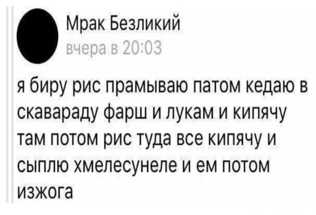

Изжога

Один из новых российских мемов относительно рецепта плова.
Ингридиенты
Рис
Фарш
Лук
Хмелесунеле
Шаги
Промыть рис
Поджарить фарш вместе с луком в сковороде
Добавить рис к фаршу, залить водой, довести до кипения
Добавить хмелесунеле, варить до готовности
Изжога